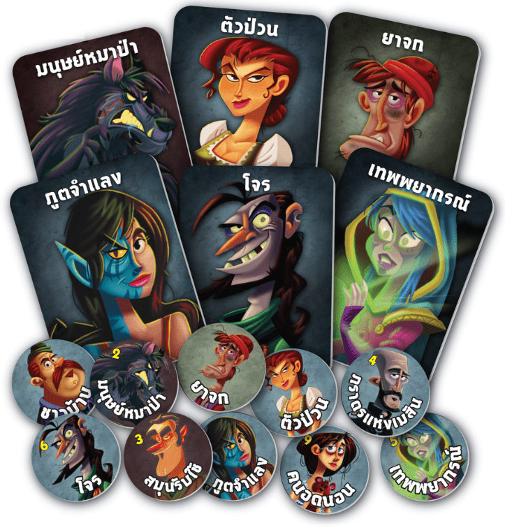

One Night Ultimate Werewolf

One Night Ultimate Werewolf (เกมมนุษย์หมาป่าคืนเดียว)
ประเภทเกม: Party
จำนวนผู้เล่น: 3–10 คน
ความยาก: ง่ายมาก (เหมาะสำหรับผู้เริ่มต้น)
เวลาในการเล่น: ประมาณ 10 นาทีต่อรอบ
วิธีการเล่น
เตรียมการ (Setup):เลือกการ์ดบทบาทมารวมกัน โดยให้มากกว่าจำนวนผู้เล่น 3 ใบเสมอ (เช่น มีผู้เล่น 5 คน ให้ใช้การ์ด 8 ใบ)สับการ์ดแล้วแจกให้ผู้เล่นคนละ 1 ใบคว่ำหน้าไว้ ส่วนการ์ดที่เหลือ 3 ใบทิ้งไว้ตรงกลางโต๊ะผู้เล่นแอบดูการ์ดของตัวเองแล้วคว่ำไว้ข้างหน้า ห้ามให้คนอื่นเห็นช่วงเวลากลางคืน (Night Phase):ทุกคนหลับตาตัวละครที่มีความสามารถพิเศษ (เช่น หมาป่า, ผู้หยั่งรู้, โจร, ตัวป่วน) จะทยอยตื่นขึ้นมาทำความสามารถของตัวเองตามลำดับ เช่น สลับการ์ด แอบดูการ์ดคนอื่น หรือดูการ์ดกองกลาง (สามารถใช้แอปพลิเคชันมือถือช่วยเปิดเสียงประกาศแทนคนดำเนินเกมได้)จุดเด่น: ไพ่ในมือคุณอาจจะถูกคนอื่นแอบสลับตอนหลับตา ทำให้คุณอาจจะไม่ใช่บทบาทเดิมตอนตื่นขึ้นมาช่วงเวลากลางวัน (Day Phase / การอภิปราย):ทุกคนลืมตาและเริ่มจับเวลาคุยกัน (ประมาณ 3–5 นาที)ทุกคนช่วยกันพูดคุย โกหก หรือสืบหาความจริงว่าใครคือมนุษย์หมาป่าการลงคะแนน (Voting):เมื่อหมดเวลา ทุกคนต้องชี้หน้าผู้เล่น 1 คนพร้อมกันว่า "ใครคือหมาป่า"ใครที่ถูกโหวตสูงสุดจะถูกกำจัด หากจับหมาป่าได้ 1 ตัว ฝ่ายชาวบ้านชนะ แต่ถ้าไม่มีหมาป่าตาย (หรือโหวตผิดคนที่เป็นชาวบ้าน) ฝ่ายหมาป่าจะชนะ